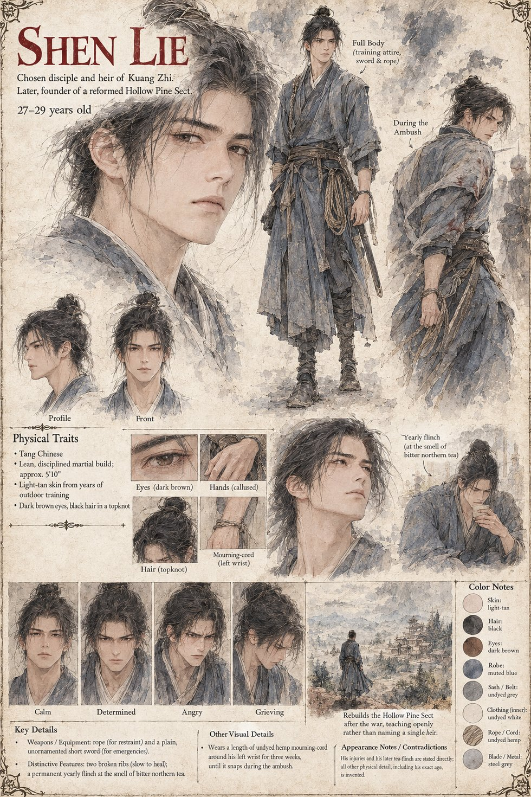

Shen Lie
Chosen disciple and heir of Kuang Zhi · later founder of the reformed Hollow Pine Sect · 27–29 by his sheet
Eleven years Kuang Zhi's student, and so used to an old man who never once complained of a late return that when he comes back from the south two days behind schedule he is entirely unbothered. He finds the shrine's candles burned down untended and his master half in the water, and he fails the way a structure fails when its load-bearing wall stops being a wall: knees first, then breath, then a sound he did not choose. He winds a length of undyed hemp cord torn from the dead man's robe once around his own left wrist, drinks from the spring, certain the gift is waiting, and feels nothing. When the Hollow Hermit turns his palm up to show footprints, he decides, with the cold procedural clarity Kuang Zhi once praised in him, that the thief will be found, kept alive, walked back up the mountain and made to give everything back, and only then will he drink. He pays Old Cao for the shepherd's whereabouts and climbs to a hollow three ridges east with a rope for restraint and a blade for emergencies only, a lie he believes less with every step.
Bai Rong greets him in his master's cadence, and a volley of Xuanwu arrows breaks the meeting; the shepherd throws him behind a rock hard enough to break two of his ribs and snap the cord at his wrist. When word of the war reaches them through a passing trader, he understands at once how a scrap of Hollow Pine hemp came to lie in that clearing, and they go back up the mountain. At the water the second time the copy arrives terror first, the memory of four strangers dying under his own hands, and then forty years of technique braided inseparably through six weeks of a shepherd's life: the only living man who has killed no one and remembers having done it. He rebuilds the Hollow Pine Sect on the same mountain with Wei Bo's memory, not Kuang Zhi's, as its founding lesson, names no heir, teaches nine or ten students in the open, and flinches once a year at the smell of a bitter northern tea he nonetheless keeps in his own kitchen. The manuscript is explicit that the reform answers his own wound and not the war's actual cause. His sheet notes that his injuries and the tea-flinch are stated directly in the manuscript, and that his age and every other physical detail are invented.
“Give it back the way it came.”
Appears In

Related Subjects


Related Records

Shen Lie back from his errand on the sixth day, among candle-stubs no one has refilled, finds his master half in the water; he does not weep so much as fail, all at once, in the manner of a structure whose load-bearing wall has stopped being a wall.

Old Cao in the back room of the wine shop, counting coins Shen Lie has not yet agreed to pay, and naming his price again, higher, once the words Hollow Pine have been said.

In the hollow three ridges east, Bai Rong turns from the dying fire into the Founder's Welcome as Shen Lie reaches the clearing with a rope for restraint and a blade for emergencies only.

Bai Rong and Shen Lie, Shen Lie holding his broken ribs, take the goat track back toward the mountain at midday; three valleys behind them the first true battle of a war neither chose is already three hours old.